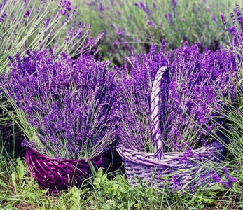

BergamotA plant that originated from Southern Italy. It was mainly used as an aroma for "Earl Grey Tea" which comes as an oil that was mixed with the tea. With its scent that help reduce strees, it was then added into perfumes.
JasmineThis plant was mainly founded in South and Southeast Asia. It is one of the most expensive scent because it requires around 8,000 blossoms to procure 1 mL of jasmine absolute.

LavenderThis plant was mainly founded in Mediterranean. It is famous because of its gentle floral scent. It is one of first flowers that ever been used in perfumes. This made it have an iconic punch to those who are using it as gentle and tender.